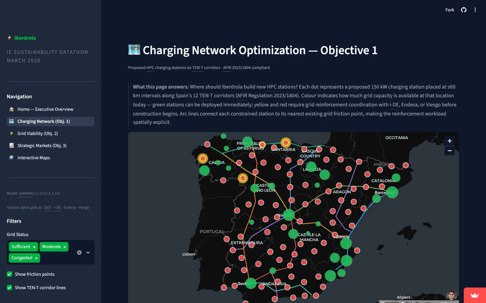

Spanish EV Charging Network
A plan for where Spain should build its interurban EV charging network by 2027, with the fewest stations. It forecasts EV demand, then checks where the electrical grid can actually support new chargers, and proposes the smallest network that still covers the country.
The smallest network that covers Spain.
The goal was coverage with the fewest stations, placed only where the grid can carry them. The proposal is 190 interurban fast-charging stations across the 52 provinces whose demand was modelled, and 164 points where demand outruns the grid. Built out, that is 479 fast chargers at 150 kW each, 71.9 MW of nameplate capacity.
Forecasting EV adoption to 2027.
We benchmarked five time-series models on 108 months of DGT registrations, from January 2015 to December 2024, and picked the one that balanced error against fit. The national forecast then splits across all 52 provinces.
The selected SARIMA won on neither error measure: ARIMA(2,1,2) has the lower RMSE and Prophet the lower MAPE. It was chosen on AIC, 88.4, and on its residuals, Ljung-Box p = 0.93, meaning what the model leaves over is noise rather than a pattern it missed. It puts 1,412,640 EVs on Spanish roads by December 2027.
Model selection
| Model | RMSE | MAPE | AIC |
|---|---|---|---|
| ARIMA(2,1,2) | 3,345 | 13.2% | 103.5 |
| SARIMA(1,1,1)(1,1,1,12) | 3,604 | 14.8% | 73.0 |
| SARIMA(1,1,1)(1,0,1,12) selected | 3,412 | 13.5% | 88.4 |
| Prophet | 3,357 | 12.9% | n/a |
| Holt-Winters | 4,373 | 34.6% | n/a |
Where growth is fastest, not where volume is highest.
Madrid and Barcelona hold the volume, 45% and 13% of projected national demand between them. The five provinces growing fastest from 2021 to 2023 are somewhere else entirely, and they are the amber markers on the map above. Badajoz and Cáceres both sit on the A-66 Ruta de la Plata, where i-DE manages the distribution network; the other three line up along the A-3.
Four layers of reality.
A good location is not just where traffic is high. It has to sit on an interurban road, near useful stops, and on a stretch of grid that can actually power a fast charger.
Scoring every candidate.
We screened over 50,000 OpenStreetMap candidates, a cut of at least 263×. Each one gets a composite score from five weighted signals, then a greedy spatial set-cover algorithm picks the highest scorer that is not within 40 km of a site already chosen. We capped the network at 300 stations; it converged at 190, which means coverage saturated before the budget did. Of those 190, 112 sit on TEN-T corridors, 59% of the network.
Traffic carries the most weight because it is the most reliable signal in the data and the best proxy for utilisation. Province-level EV demand carries the least, because it is a blunt instrument and the traffic signal already captures where people actually drive. Grid capacity ranks candidates rather than excluding them: a congested site is buildable with investment, not impossible.
Composite score weights
Where the grid says no.
Every proposed station is tagged by the capacity of its nearest grid node. The congested ones are not bad locations, they are the places where a grid upgrade is the only thing standing in the way. What separates the three bands is what that upgrade costs and how long it takes.
Spain is not short of chargers. The 6,896 units already near motorway corridors are almost entirely slow AC, of little use to someone crossing the country, and the real wall is the grid: of the 190 highest-scoring sites, only 26 can be built with no grid works at all, and the rest cannot carry even the AFIR minimum of 2×150 kW without a substation upgrade. Across 5,714 CNMC substation nodes, 92.9% held zero firm available capacity as of April 2026, after a 2023–2025 surge in data centre, renewables and industrial connection applications took the headroom.
| Band | Hosting capacity | Stations | What it means |
|---|---|---|---|
| Sufficient | ≥ 5 MW | 2613.7% | The grid can power a fast charger today. Build first.No grid works · deployable as they are |
| Moderate | 1 – 5 MW | 21.1% | Workable, but close to the limit. Plan carefully.Upgrade 6–18 months · €0.5–2M per node |
| Congested | < 1 MW | 16285.3% | Demand outruns the grid. These 162 points, plus the 2 moderate sites, are the 164 reinforcement priorities.Upgrade 12–36 months · €2–10M per node |
A phased rollout.
The proposal is not just a map, it is an order of operations. Build where the grid is ready first, then the sites one distributor can fast-track, then the rest.
This is the phasing as presented to the jury. The written report, embedded further down, sequences the same 190 stations in a different order.
Shipped as a dashboard, not a notebook.
The analysis only matters if someone at the utility can act on it, so we wrapped it in a five-page Streamlit app: an executive overview, one page per datathon objective, and the interactive maps. Below is the Charging Network page as it runs.

The report and the pitch.
Two documents came out of the week: a written strategy report with the full methodology, model selection, and appendix of assumptions, and the deck we presented to the jury. Both are below, scrollable in place.